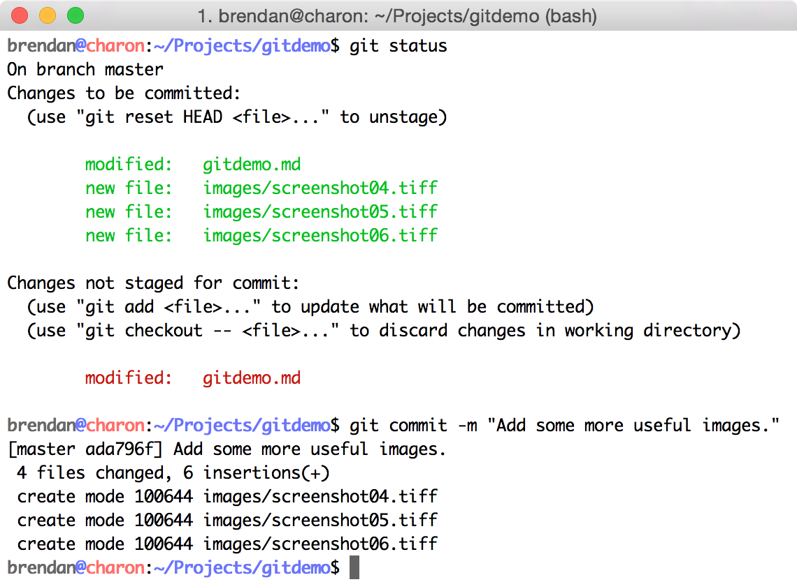
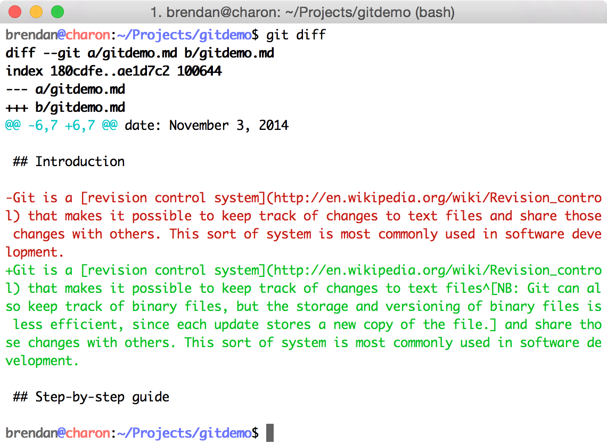

Git is a revision control system that makes it possible to keep track of changes to text files1 and share those changes with others. This sort of system is most commonly used in software development.
Rough examples
Here are some examples that might help you in getting started!
Initializing a repository
Creating a new repository in an empty directory
Creating a new file in the the project directory
Adding the new file to version control, showing the staged file, and committing the result
Adding new files and changes
Creating some new files, listing the directory contents, and showing the status of the Git repository
Checking for changes in the repository’s files
Trying to check differences in image files, adding the changes and new files to version control, committing the results
Atomic commits and selecting changes
Several simultaneous changes; adding only some of the files to the staging area
Showing the differences in the document; there are two main sets of changes
Adding only the second change—this goes with the images—using interactive mode

Showing the changes that are staged and those that aren’t; committing related changes

Showing the remaining changes that were not staged before
Adding the changes and committing
More changes, and showing logs
Adding some more files
Showing the commit logs
Showing summary of the commit logs
Showing commit logs with decorations (branches, tags, etc.) and a straight-line graph
Branching and merging
Creating a branch for improving links
Making changes in the new branch improvelinks
Back on the master branch, making some more changes
Making changes in a branch called fixtypo
Committing the changes to the fixtypo branch
Merging the fixtypo branch into master by “fast-forward”
Merging the improvelinks branch into master by “recursive”
NB: Git can also keep track of binary files, but the storage and versioning of binary files is less efficient, since each update stores a new copy of the file.↩